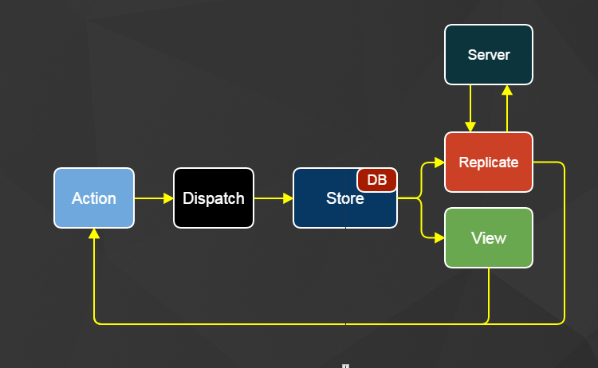

jrhicks.github.io
jrhicks.github.io
Offline Flux with LokiJS
Data fetching and replication for Offline React Single Page Applications
Data fetching and replication for Offline React Single Page Applications
#Introduction#
In my last post, navigating data space was proposed as one of a few concerns of client side routing and the following architectures were investigated:
Dan Abramov's Content Stores Pattern
Facebook's Relay Architecture
A Home Brewed Offline Partitions Store
In this article I recap these patterns quickly and introduce how an offline flux pattern and example project that draws on qualities of each of these.
#Content Stores Pattern#

Dan Abramov's Content Stores approach is pure flux! We have a content store for each entity type. Server actions dispatch to all stores, the stores inspect the response and harvest any data that pertains to them. The views listen to stores and render as needed.
#Relay Architecture#
Facebook's Relay approach is pure decoupling! Statically declare the data needs of a component within itself. Eliminate creating and maintaining custom server end-points that match the needs of each component (and subcomponent) on the page.

#Offline Flux
I liked the pure flux of Dan's approach and the pure decoupling of Relay. How could I combine these ideas, into an architecture that featured a replicating database that could be used offline.

##Replicate
In the diagram above, you might find Replicate to be placed oddly as a sibling of view. You can consider Replicate as a background worker that initiates actions routinely. Replicate listens to stores similarly to components, but instead of updating DOM it changes aspects of replication.
ReplicateStore tells Replicate:
What to Replicate
How frequently
Paging & Cursor Management
class Replicate {
// Replicate (Like A Component) Listens to Stores
constructor() {
ReplicateStore.listen(this.onReplicationChange);
this.state = ReplicateStore.getState();
}
onReplicationChange() {
this.state = ReplicateStore.getState();
}
// Replicate Is Worker That Continuously Runs
async run() {
let resolution = 50;
while (true) {
if (this.state.shouldReplicate) {
await this.createReplicateAction();
}
await this.milliseconds(resolution);
}
}
// ...
}
It works out nicely for replication duties and behavior to be governed by stores because the replicate worker and views can respond equally.
##DB
You will also notice a DB inside of Store. This illustrates that access to the DB is mediated through the store. When Replicate receives a page of data from the server it sends a queue action to the ReplicateStore. ReplicateStore appends the data to its queue and loads it in 20 microsecond intervals. LokiJS can knock out well over 1000 in this time. Similarly; basic insert, save, and delete operations are mediated through the store.
##Similarities to Content Stores##
Much like Content Stores, data is stored normalized and the Flux pattern is respected. Unlike Content Stores, the different entities are not separated into their own stores. Data is segregated into collections (LokiJS's concept of a table). Having all collections in one store keeps things real easy, but it might seem at the cost of components over-responding to changes from collections they don't care about. However, if components check collection's updatedAt in shouldComponentUpdate they can remain lazy.
##Similarities to Relay##
Similar to Relay, the components control what data is fetched! In this example we get the projectId from the router and tell the replicated database to include the notes and contacts for this project.
componentWillMount() {
let projectId = parseInt(this.getParams().projectId);
ReplicateActions.subscribe('note', {project_id: projectId} );
ReplicateActions.subscribe('contact', {project_id: projectId} );
},
Similar to Relay, your server can have one generic server end point! Which is awesome! But you don't need GQL magic on the server, here is a basic implementation in Rails
##Performance##
Its fast! Thanks React and Loki! In this video, I sync (download and insert into an offline database) over 10,000 records. I'm using Flux to manage the replication process and update the React view component to display progress.
While I'm pretty happy with 11,000 records in 4 seconds, I'm pretty sure I could make it a lot faster if I didn't wait until it was done loading each batch before I requested the next batch from the server.
##Example Repository##
You can checkout the full project here https://github.com/jrhicks/LokiJS-Flux-Example
git clone https://github.com/jrhicks/LokiJS-Flux-Example.git
cd LokiJS-Flux-Example
bundle install
rake db:setup
npm install
foreman start